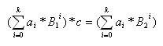

Numerous are the moments I as a programmer have
been frustrated by the tedious conversions between decimal numbers and hexadecimal
ones. Why have we chosen 10 as a base in our everyday numerical
presentations, when 16 seems so practically appealing? Obviously because
everyone is not the computer geek I am. Maybe some day the world will fully
realise the benefits of the hexadecimal system. In the meantime I have to learn
to master the base conversions since most of the time numbers do not resemble
one another in different bases.
Sometimes peculiar relationships emerge among
the different base representations of numbers though. For instance, I noticed
just the other day that 104010 * 4 = 104016,
i.e. (1*103+0*102+4*101+0*100)*4=(1*163+0*162+4*161+0*160).
It made me wonder how often this is the case, that is, the digits of a number
in one base, are exactly the same as the digits of a multiple of the number in
another base. Formally, let B1<B2
be positive integers, and a0,a1,…,ak
be integers in [0…B1-1]. For which ai’s is there a positive integer c such that

On the first line of input is a positive
integer n telling the
number of test cases that follow. Each test case is on a line of its own and
consists of two integer bases B1,
B2, 9<B1<B2<100, and two integer range elements, r1, and r2, 0<r1<r2<10000. Notice that all numbers in the input
are given in the base 10.
For each test case, there should be one row
containing the largest integer i,
fulfilling r1<i<r2, for which there is a positive integer c such that the digits of i in the base B1,
are exactly the same as the digits of i*c
in the base B2.
If no such integer i exists, output the text ‘Non-existent.’.
|
4
10 16 1 2000 10 16 1 4999 10 14 10 9999 11 14 10 9999 |
1040 4240 Non-existent. 9240 |
Problem setter: A. Björklund